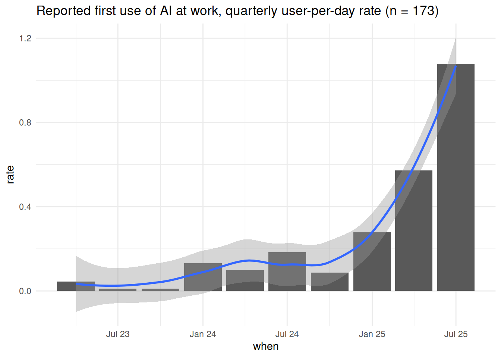

Applications of AI
Introduction
- this is a session designed to cut through the hype about AI by looking at what people like you actually use AI for
- at present (late 2025), that’s strongly oriented towards working with text
- we’ll give some practical work-throughs of real-life AI tasks using the free version of Microsoft Co-Pilot
- and discuss some strengths and weaknesses of using AI to do this work
- it’s largely practical, so much of what we cover today will be about practical use of AI models, and isn’t documented step-by-step here
Watch out!
- the term AI is problematic - see our companion session for more information about that
- we should probably avoid the term all together, but that feels very un-natural when the rest of the world calls it AI
- specifically, discussing generative large-language models (OpenAI’s ChatGPT, and Microsoft’s Co-Pilot products, largely)
Survey
- this session originates in an informal survey in the KIND network during August 2025
- investigating workplace uses of AI, by asking:
- Have you used AI for anything at work?
- When you first used AI at work?
- What you used AI to do, with choices of:
- (re)drafting text
- summarising text
- learning new skills
- code review
- transcribing meetings
- analysing data
- Where you work (with a choice of health, social care, somewhere else / a combo)
- we received 214 responses - so a small sample that needs careful interpretation
- and strongly biased towards workers in heath, with 177 (83%) responses from health workers
Using AI
- most people had used AI at work
- but most are comparatively recent first-users (mean of 8 months since first use)
| response | n | percent |
|---|---|---|
| Yes | 183 | 86% |
| No / not sure | 30 | 14% |
| NA | 1 | 0% |
Trend
- small sample, so care, but there’s an upward trend in new users

That means that most of the responses here are from users with limited experience in using AI, so please interpret the tasks and results with that in mind.
Tasks
For the provided list of standard responses provided, drafting and summarising text were by far the most frequent uses:
| tasks | n |
|---|---|
| (re)drafting text | 113 |
| summarising text | 113 |
| learning new skills | 77 |
| code review | 56 |
| transcribing meetings | 55 |
| analysing data | 48 |
59 one-off responses were returned, which can be broadly grouped into:
| category | n |
|---|---|
| designing code | 8 |
| literature searching and starting off new research projects | 7 |
| documenting processes and similar (SOPs, job descriptions, technical documentation) | 7 |
| graphic design work | 5 |
| proving help with interpretation (stats, code, data) | 3 |
| project management | 3 |
| pros and cons of software | 2 |
| help with searching | 2 |
| avoid/never successfully used! | 2 |
| summarising text | 2 |
| translating code between languages | 2 |
| testing | 1 |
| social media | 1 |
| image interpretation/classification | 1 |
| extracting data | 1 |
| thematic analysis | 1 |
| vibe coding | 1 |
Task examples
Warning
Your information governance, cybersecurity, and other governance teams will have a strong opinion about the permissible uses of these models in your work. Just because we’re doing it here, doesn’t mean you can do the same at work.
Redrafting text - live Co-Pilot demo
- LLMs are fantastic at re-drafting text
- some examples:
- take these bullet points and…
- reduce the reading age of…
- summarise this text to…
- but…
- they’ll often soften important points. LLMs tend to be agreeable, and that’s a problem
- there’s a bland and agreeable LLM house-style, and it’s hard to represent yourself authentically via LLM
- summaries especially can miss the brief - but vital - point
- top tips:
- iterating - asking the model to re-work it’s response can be very effective (take this text and x. Now soften the y. Add z.)
- everything needs careful review. Okay, the model won’t make spelling mistakes - but it’s much more likely to alter what you set out to say than you might think. Make sure you’re still telling people what you want to tell them
- try not to be impressed by production. LLMs tend to produce long and windy blocks of text. As standard, I ask them to make text more concise.
An interjection about ethics
learning new skills - live Co-Pilot demo
- LLMs are good for learning new work skills
- Because of the large quantity of technical training data (StackOverflow and co), basically everything is in there
- you can iterate: so ask the model to demonstrate a simple solution, tweak, increase the complexity as necessary
- that’s very helpful if you’re keen on harnessing the power of a rubbish (but improvable) prototype
- and - assuming data governance is okay - you can potentially seed with real data (take this, and give me back that)
- but…
- they’re not equally good at everything: PowerQuery (anecdote)
- hallucinations are especially bad/annoying for code
- hard to know if you’re learning the right way, or the wrong way
- top tips:
- start small, and keep the steps short
- cross-check: I use a reference source and the model wherever possible
- use technical terms: I try and ask for a description of “list comprehension” or whatever, rather than sticking to ordinary language if possible
Transcribing meetings - live Teams demo
- we’ll record a bit of the meeting now…with hilarious consequences…
Data analysis
- we’ll do this, largely to suggest that it’s a brave-even-foolhardy thing to attempt
- help interpreting is great, chuck it in the model and see is negligent